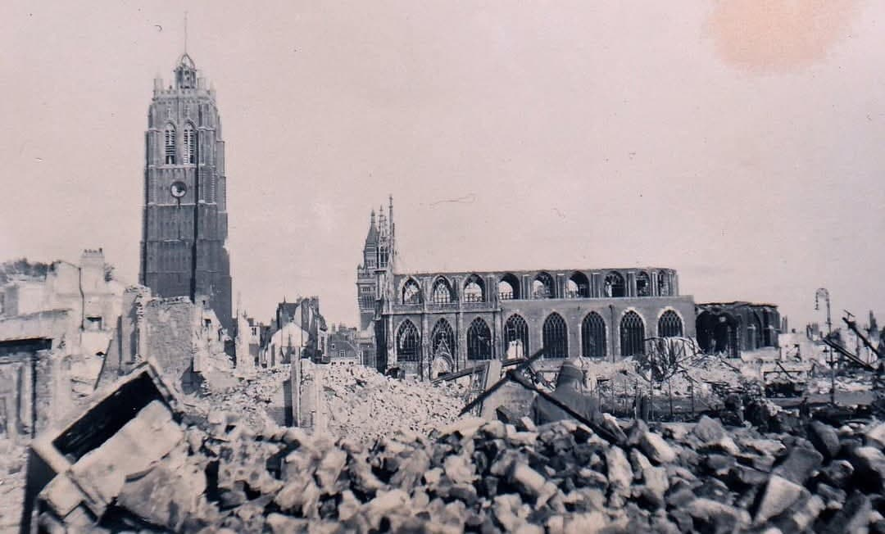
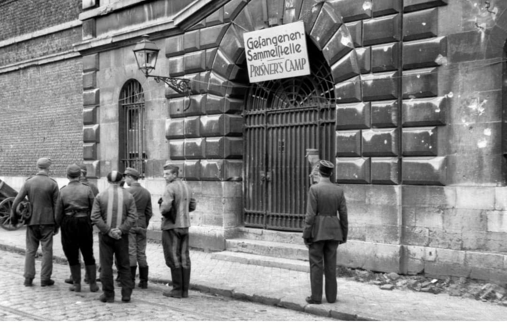
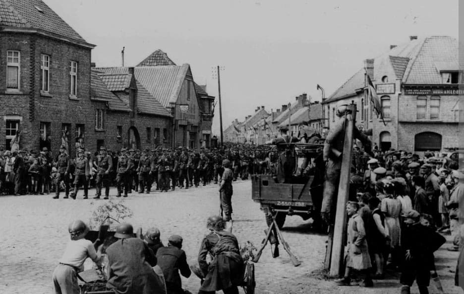
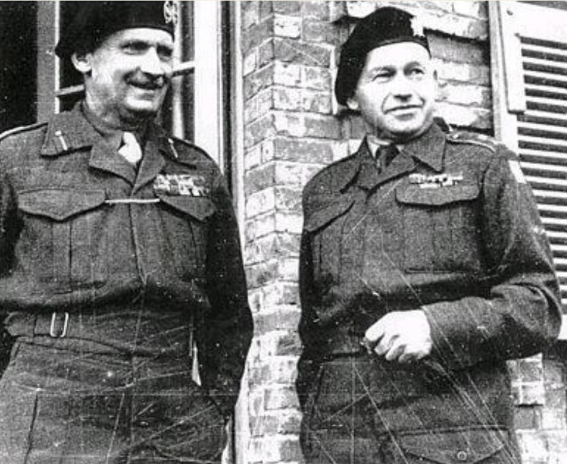
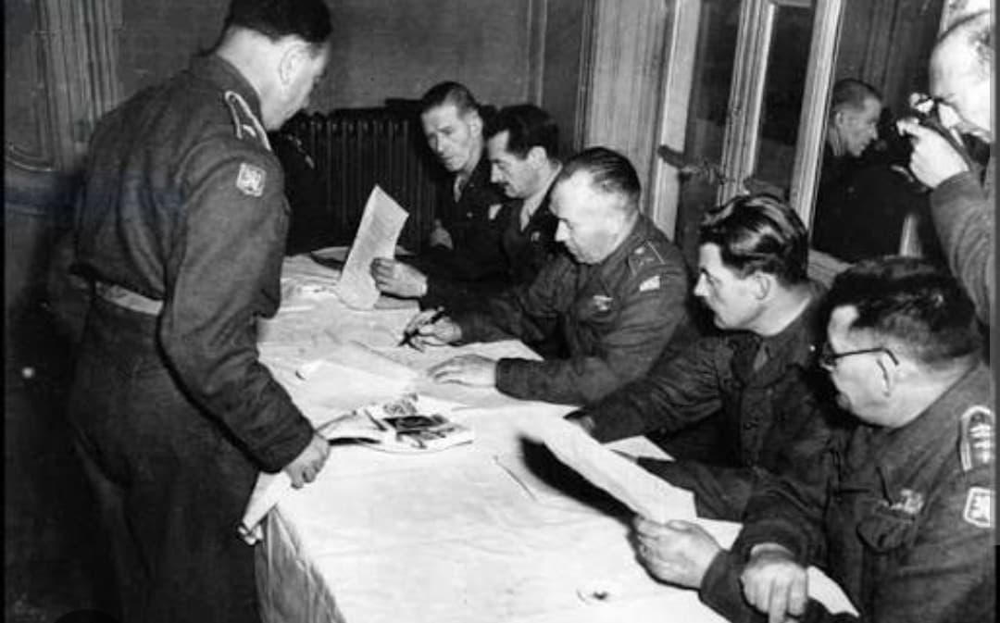
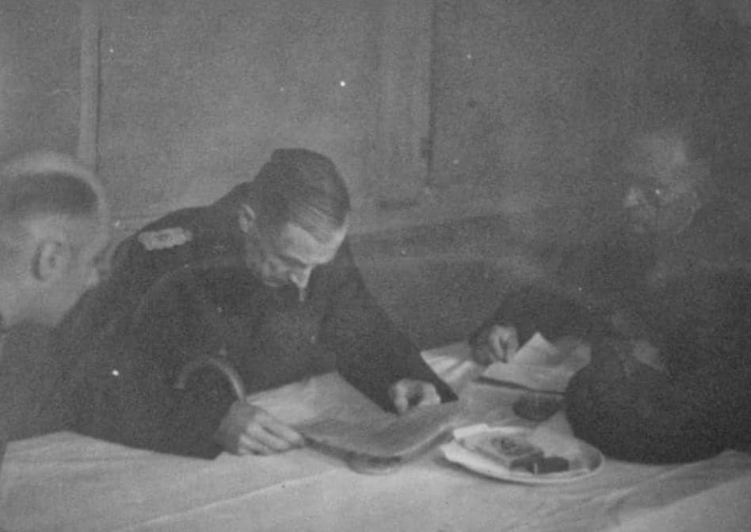
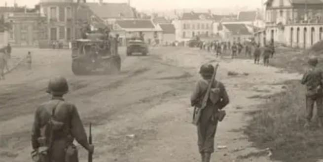
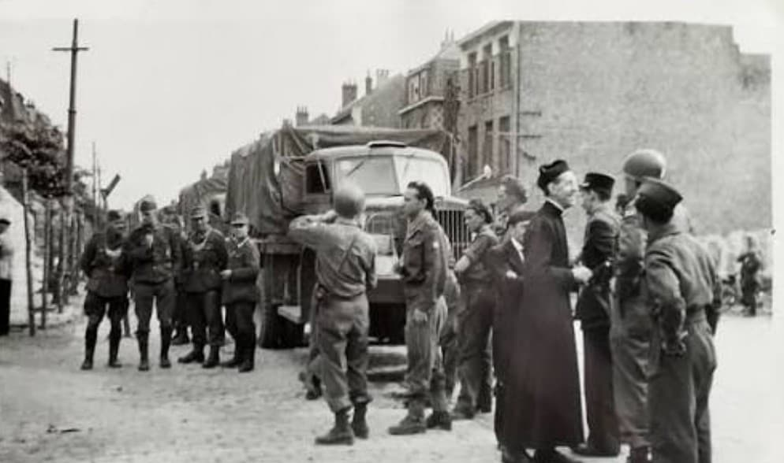

Introduction
La libération de Dunkerque, le 9 mai 1945, est un événement unique dans l’histoire de la Seconde Guerre mondiale. Alors que l’Europe fête la victoire le 8 mai, Dunkerque reste encore occupée : la garnison allemande, retranchée dans la Festung Dunkerque, refuse de se rendre.
Depuis septembre 1944, la ville est encerclée par les forces tchèques de la 1re brigade tchécoslovaque. Pendant huit mois, Dunkerque vit isolée, coupée du monde, ravagée par les bombardements et les combats sporadiques. La population civile endure un siège silencieux, marqué par la faim, le froid et la destruction.
Le 9 mai 1945, un jour après la capitulation générale de l’Allemagne, Dunkerque est enfin libérée. Cet épisode marque la fin d’un siège exceptionnel et la renaissance d’une ville martyrisée depuis 1940.
Contexte
Le 8 mai 1945, l’Europe célèbre la fin de la guerre. Mais Dunkerque reste encore occupée : la garnison allemande du général Friedrich Frisius refuse de se rendre. La ville, encerclée depuis septembre 1944 par les forces tchèques, vit ses dernières heures de siège.
▶ Voir la vidéo YouTube
Le camp de prisonniers
Après la capitulation, les soldats allemands sont regroupés dans des points de rassemblement. Les Tchèques organisent le tri, l’enregistrement et la sécurisation des prisonniers. Les soldats sont désarmés, identifiés, puis dirigés vers des camps provisoires installés dans les environs de Dunkerque.
Pour beaucoup d’entre eux, c’est la fin d’un siège éprouvant, marqué par la faim, le froid et l’isolement. Les Tchèques veillent à maintenir l’ordre et à éviter tout incident.

La garnison allemande quitte Dunkerque
Le 9 mai 1945, les troupes allemandes quittent la ville en colonne, sous surveillance tchèque. Les civils assistent à ce départ historique, symbole de la fin de cinq années d’occupation.
Les rues, encore jonchées de ruines, voient passer des soldats épuisés, qui abandonnent définitivement la Festung Dunkerque. Ce moment marque la fin d’un siège de 242 jours.

Les forces tchèques entrent dans Dunkerque
La 1re brigade tchécoslovaque, commandée par le général Alois Liška, entre dans la ville. Leur mission : sécuriser Dunkerque, protéger les civils et recevoir officiellement la reddition.
Les Tchèques découvrent une ville dévastée, silencieuse, figée dans la guerre depuis 1940. Leur arrivée marque le début de la stabilisation et du retour progressif à la vie civile.

Les officiers tchèques
Les officiers tchèques supervisent la transition, le contrôle des prisonniers et la sécurisation des quartiers. Leur rôle est essentiel pour éviter les pillages, les violences et les débordements dans une ville encore instable.
Ils assurent également la coordination avec les autorités locales et les services civils, permettant une reprise progressive de l’ordre.

La signature de la reddition
Dans une salle improvisée, les officiers tchèques et allemands se réunissent pour formaliser la capitulation. Les documents sont signés, scellant la fin de la Festung Dunkerque.
Le général Frisius reconnaît officiellement la défaite. Cette scène marque la fin de neuf mois d’encerclement et l’un des derniers actes militaires de la guerre en France.


Frisius face aux Tchèques
Le général Frisius se présente devant les officiers tchèques pour reconnaître officiellement la défaite. Malgré la fin de la guerre, il avait refusé de capituler le 8 mai, espérant obtenir des conditions plus favorables.
Le 9 mai, il n’a plus d’autre choix : Dunkerque est libérée.

Les civils retrouvent leur ville
Après la reddition, les civils sortent dans les rues, rencontrent les soldats alliés et assistent aux mouvements de troupes. Dunkerque renaît lentement après des années de guerre.
Les habitants redécouvrent une ville méconnaissable, mais enfin libre. La reconstruction commence, marquant le début d’un nouveau chapitre pour la cité de Jean Bart.

⬅ Retour aux opérations